Wombat’s 50 Favorite Albums
What The Title Says
November 8, 2026 · Originally posted on Wombat’s Journal
In Alphabetical Order:
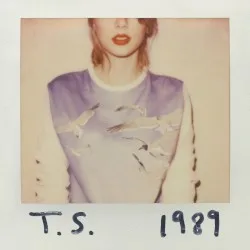
1989 — Taylor Swift 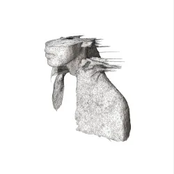
A rush of Blood to the head — Coldplay 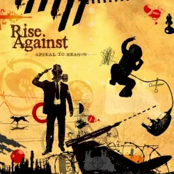
Appeal To Reason — Rise Against Being Funny In A Foreign Language — The 1975 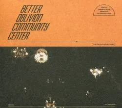
Better Oblivion Community Center — Better Oblivion Community Center Bloodless — Samia 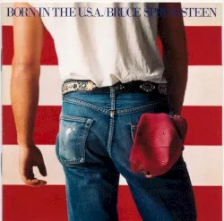
Born in the USA — Bruce Springsteen 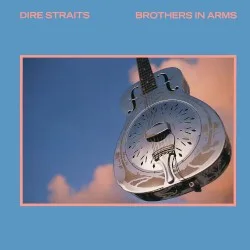
Brothers in Arms — Dire Straits 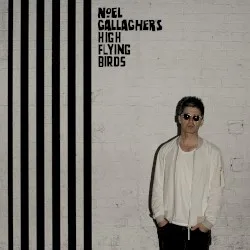
Chasing Yesterday — Noel Gallagher’s High Flying Birds Collapsed in Sunbeams — Arlo Parks 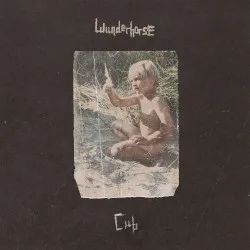
Cub — Wunderhorse Cuts & Bruises — Inhaler 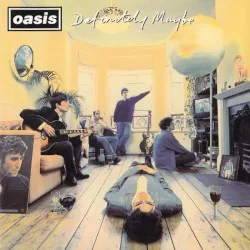
Definitely Maybe — Oasis 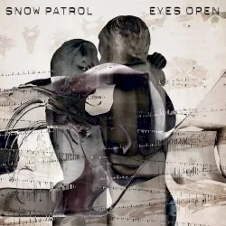
Eyes Open — Snow Patrol Fleetwood Mac — Fleetwood Mac 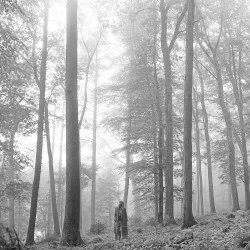
Folklore — Taylor Swift 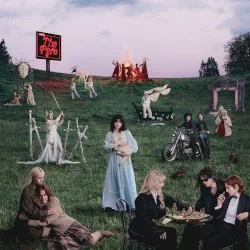
From The Pyre — The Last Dinner Party 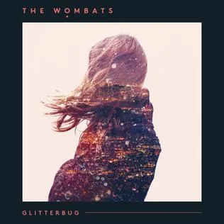
Glitterbug — The Wombats 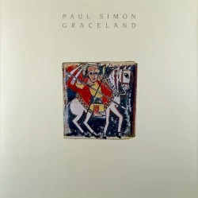
Graceland — Paul Simon 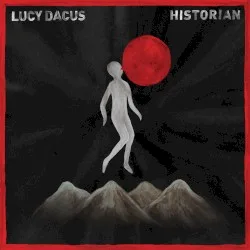
Historian — Lucy Dacus 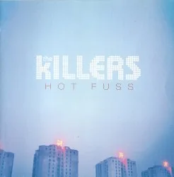
Hot Fuss — The Killers 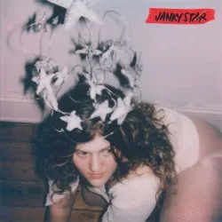
Janky Star — Grace Ives 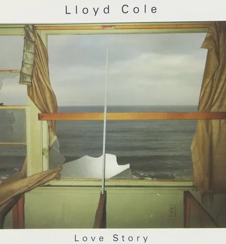
Love Story — Lloyd Cole 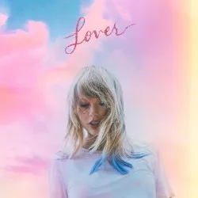
Lover — Taylor Swift 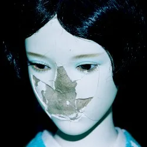
MADRA — NewDad 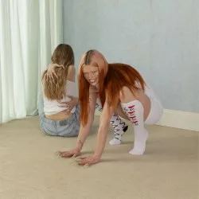
moisturizer — Wet Leg 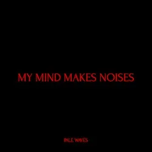
My Mind Makes Noises — Pale Waves 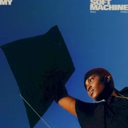
My Soft Machine — Arlo Parks 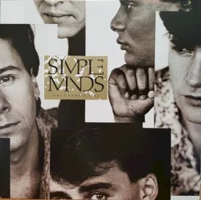
Once Upon A Time — Simple Minds 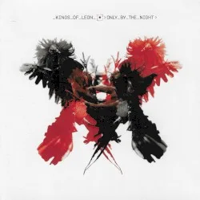
Only By The Night — Kings of Leon 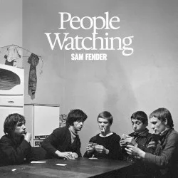
People Watching — Sam Fender 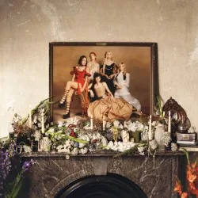
Prelude to Ecstacy — The Last Dinner Party 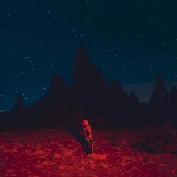
Punisher — Phoebe Bridgers 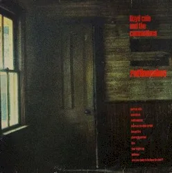
Rattlesnakes — Lloyd Cole & The Commotions 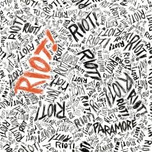
Riot! — Paramore 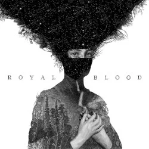
Royal Blood — Royal Blood 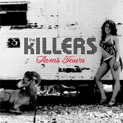
Sam’s Town — The Killers 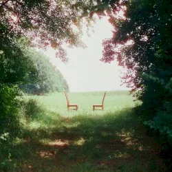
Singin’ to an Empty Chair — Ratboys 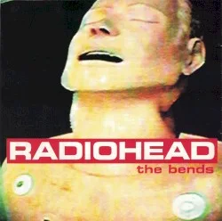
The Bends — Radiohead The New Abnormal — The Strokes the record — Boygenius 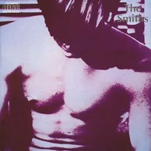
The Smiths — The Smiths 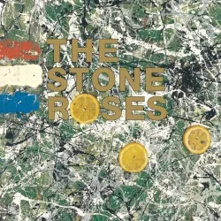
The Stone Roses — The Stone Roses 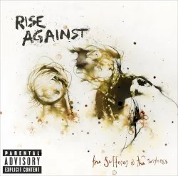
The Sufferer & The Witness — Rise Against 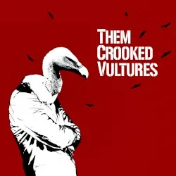
Them Crooked Vultures — Them Crooked Vultures 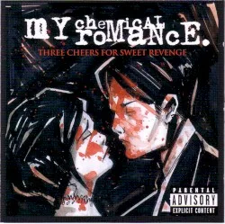
Three Cheers For Sweet Revenge — My Chemical Romance Typhoons — Royal Blood Welcome to The Black Parade — My Chemical Romance 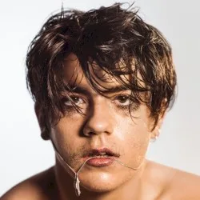
What Do You Think About The Car — Declan McKenna 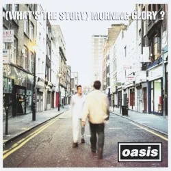
(What’s the Story?) Morning Glory — Oasis 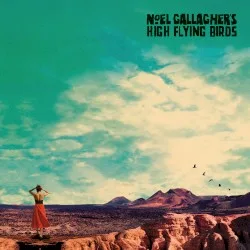
Who Built The Moon? — Noel Gallagher’s High Flying Birds